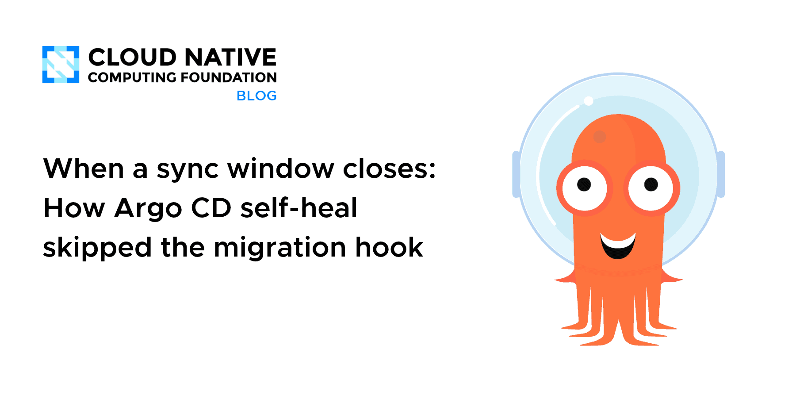
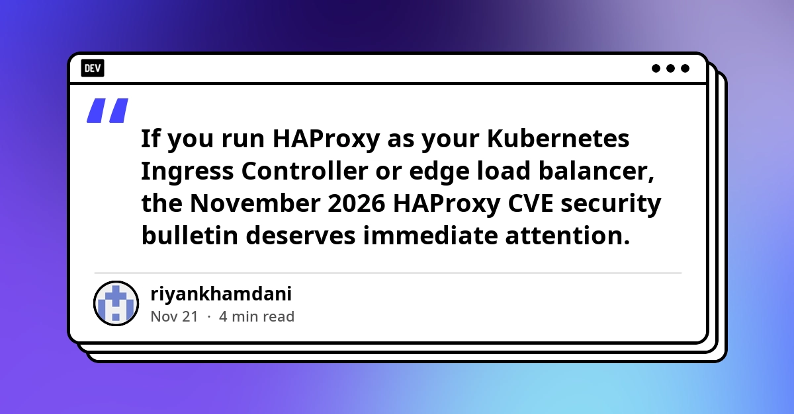
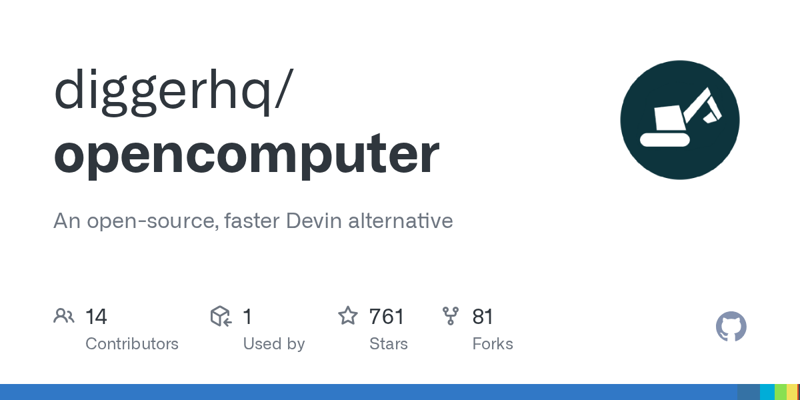

🔥 Top 3 (must read)
When a sync window closes: How Argo CD self-heal skipped the migration hook
A customer pushed a release while an Argo CD deny sync window was active. Argo CD reported "sync succeeded", but the database migration hook never ran. The post explains how self-heal and sync windows work together to cause this. Why it matters: If your team deploys with Argo CD and runs migrations as hooks, a green sync status may not mean your migration ran.

Verify Webhook Signatures in Node.js: Fix the Raw-Body Bug
The well-known Stripe error "No signatures found matching the expected signature for payload" almost always has one cause. A body parser changes the request body before you hash it. The post shows how to keep the raw body so the signature check passes. Why it matters: This is a common, quiet failure in Node.js payment and webhook services, and the fix is small.
D
Your Kubernetes Ingress Is One Crafted Packet Away from a Blackout: Hardening HAProxy Against HTTP/2 & HTTP/3 DoS
The November 2026 HAProxy security bulletin covers flaws that let any client on the internet, with no login, crash HAProxy using crafted HTTP/2 or HTTP/3 traffic. The post explains the risk and how to harden HAProxy when you use it as a Kubernetes ingress or edge load balancer. Why it matters: If HAProxy sits at the front of your cluster, one attacker can take the whole cluster offline. Check your version now.

🛠 Tools & releases
Ship It Weekly: Java4Shell, Microsoft Agent Framework PyPI hijack, Confluence Axis RCE
: A weekly security roundup with three main stories: - Microsoft's
agent-framework package on PyPI shipped a credential stealer in two versions. Each was live for less than one hour. - An OpenJDK HotSpot memory bug in the Base64 decoder ("Java4Shell") only hits x86 CPUs with AVX-512 VBMI. - Attackers are exploiting a Confluence Data Center RCE (remote code execution: running their own code on your server) through its old Apache Axis library.R
It is a good reminder to pin versions of AI agent SDKs.
🤖 AI for developers
Epic Games Turns to AI Coding for the Unreal Engine
: A case study of a large engine team bringing AI coding tools into a huge, old C++ codebase. (HN discussion, 60 comments)
🎯 For me
webhook raw-body post
Node.js backend: The applies directly to any Stripe, PayPal, or other webhook handler in Express or Fastify.
D
Argo CD sync-window post
DevOps and deploys: The is worth sharing with whoever owns your Argo CD apps and migration hooks.
Epic Games story
EM angle: The is a real example of how a big team adopts AI coding tools.
💡 App ideas & indie builds
OpenComputer
: An open source alternative to Devin, the autonomous AI software engineer. - User problem: Teams want an agent that takes a task and works on it alone, but hosted agents are closed and costly. - Inspiration: It shows there is demand for self-hostable agent setups that you can inspect and change. - Discussion: HN, 72 points.

🎓 Try this
Open your Node.js webhook handlers and check the order of middleware. The signature check must hash the raw body, not the parsed JSON (for example, use
express.raw() on the webhook route only). Follow the steps in Verify Webhook Signatures in Node.js: Fix the Raw-Body Bug.